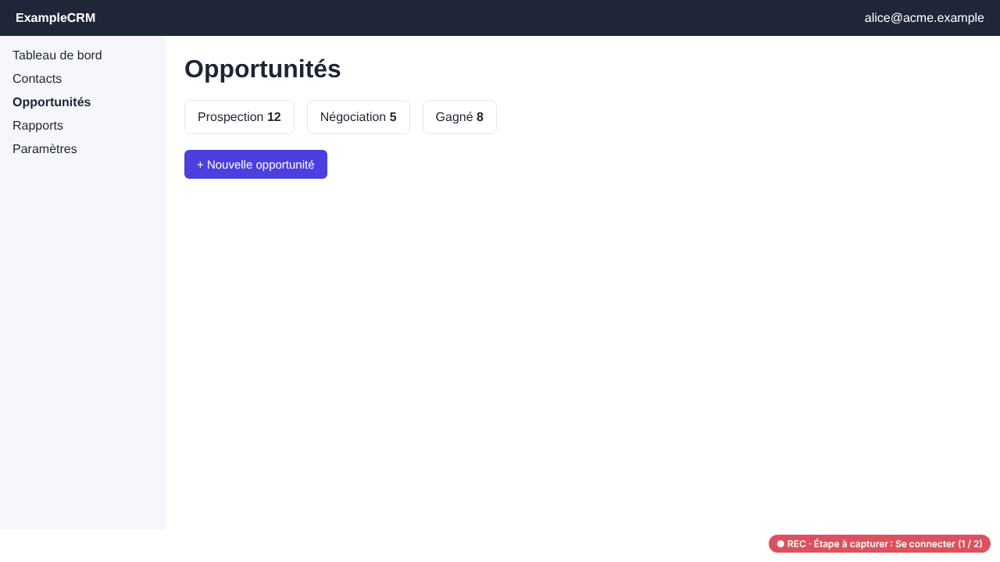
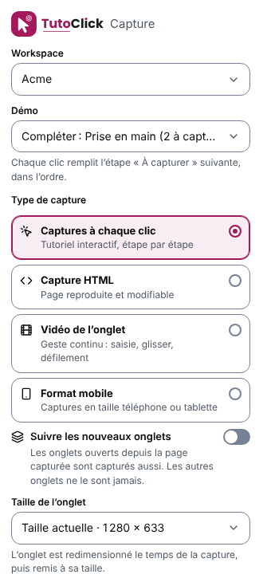
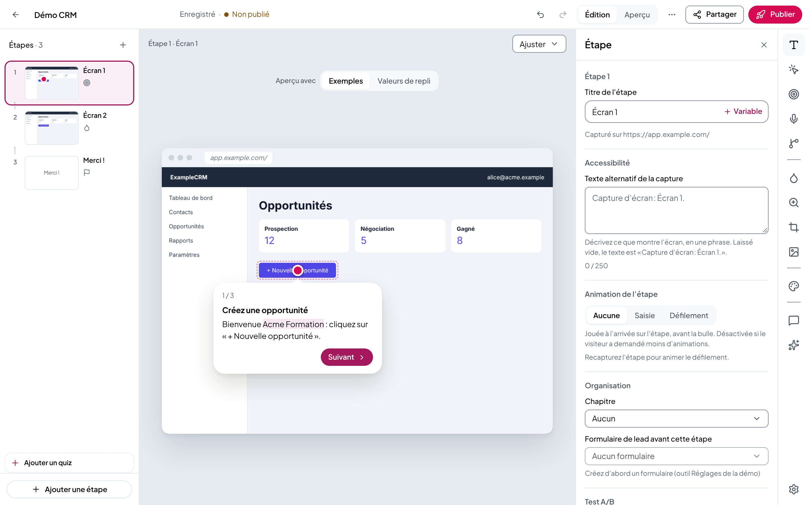
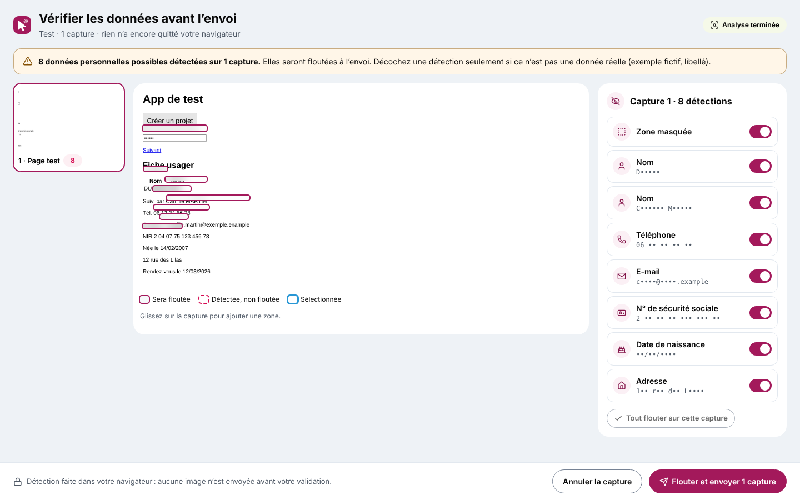
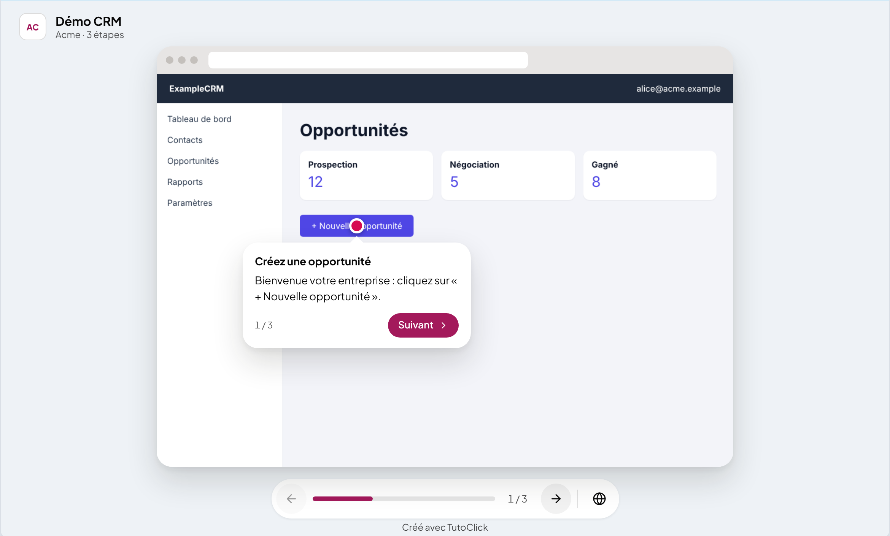
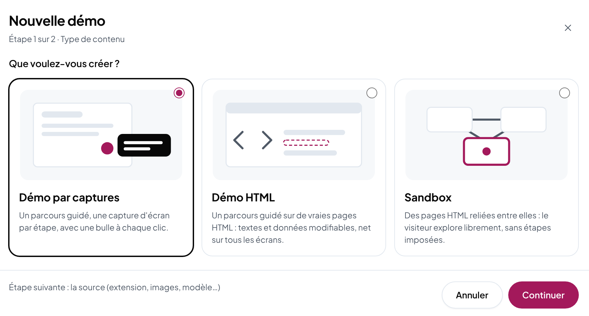

Choisissez le type de capture, puis cliquez : chaque clic devient une étape.


Retouchez les textes, ajoutez des variables et une voix off dans l'éditeur.

La détection se fait dans votre navigateur : rien n'est envoyé avant votre validation.

Par lien, dans votre intranet ou en paquet SCORM pour votre plateforme de formation.

Pages HTML : textes modifiables sans recapturer. Sandbox : le visiteur explore librement.
